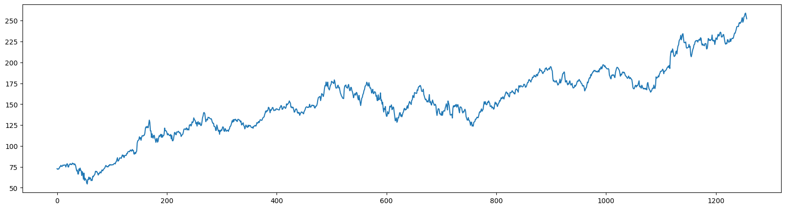
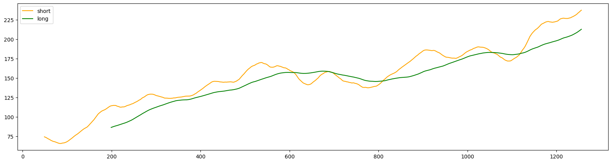
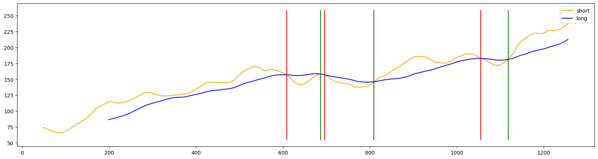

Project: Moving average crossover#
https://en.wikipedia.org/wiki/Moving_average_crossover
import matplotlib.pyplot as plt
import numpy as np
Data#
import yfinance as yf
close = yf.Ticker('AAPL').history(start='2020-01-01', end='2024-12-31').Close.to_list()
close[:5]
[72.7960205078125,
72.08828735351562,
72.66271209716797,
72.32095336914062,
73.48436737060547]
len(close)
1257
plt.figure(figsize=(20,5))
plt.plot(close);

def data_import(symbol='AAPL', start='2020-01-01', end='2024-12-31'):
return yf.Ticker(symbol).history(start=start, end=end).Close.to_list()
data_import()[:5]
[72.7960205078125,
72.08828735351562,
72.6627197265625,
72.32098388671875,
73.48436737060547]
Simple Moving Average#
def sma(data, period):
sma_list = [np.nan]*(period-1)
for i in range(len(data)-period+1):
sma_list.append(sum(data[i:i+period])/period)
return sma_list
toy_data = [1,2,3,4,5,6]
sma(toy_data, 3)
[nan, nan, 2.0, 3.0, 4.0, 5.0]
sma(toy_data, 4)
[nan, nan, nan, 2.5, 3.5, 4.5]
short = sma(close, 50)
long = sma(close, 200)
plt.figure(figsize=(20,5))
plt.plot(short, label='short', c='orange')
plt.plot(long, label='long', c='green')
plt.legend();

Crossovers#
A buy signal occurs when the shorter-term moving average (MA) crosses above the longer-term MA, signaling an upward trend shift, commonly referred to as a “golden cross”.
A sell signal occurs when the shorter-term moving average (MA) crosses below the longer-term MA, signaling an downward trend shift, commonly referred to as a “dead/death cross”.
Reference: https://www.investopedia.com/articles/active-trading/052014/how-use-moving-average-buy-stocks.asp#:~:text=Moving averages with a shorter,of potential support or resistance
actions = []
for i in range(len(close)-1):
if (short[i] < long[i]) & (short[i+1] > long[i+1]):
actions.append({'signal': 'buy', 'day':i, 'value': close[i]})
if (short[i] > long[i]) & (short[i+1] < long[i+1]):
actions.append({'signal': 'sell', 'day':i, 'value': close[i]})
actions
[{'signal': 'sell', 'day': 609, 'value': 149.181396484375},
{'signal': 'buy', 'day': 687, 'value': 148.6180419921875},
{'signal': 'sell', 'day': 696, 'value': 143.67825317382812},
{'signal': 'buy', 'day': 809, 'value': 157.86312866210938},
{'signal': 'sell', 'day': 1055, 'value': 170.51303100585938},
{'signal': 'buy', 'day': 1118, 'value': 212.58978271484375}]
plt.figure(figsize=(20,5))
plt.plot(short, label='short', c='orange')
plt.plot(long, label='long', c='b')
plt.legend();
for action in actions:
if action['signal'] == 'buy':
plt.vlines(action['day'], min(close), max(close), color='green')
else:
plt.vlines(action['day'], min(close), max(close), color='red')

def action_producer(long_data, short_data, close_data, graph=False):
actions_list = []
for i in range(len(long)-1):
if (short_data[i] < long_data[i]) & (short_data[i+1] > long_data[i+1]):
actions_list.append({'signal': 'buy', 'day':i, 'value': close_data[i]})
if (short[i] > long[i]) & (short[i+1] < long[i+1]):
actions_list.append({'signal': 'sell', 'day':i, 'value': close_data[i]})
if graph:
plt.figure(figsize=(20,5))
plt.plot(short, label='short', c='orange')
plt.plot(long, label='long', c='b')
plt.legend()
for action in actions_list:
if action['signal'] == 'buy':
plt.vlines(action['day'], min(close), max(close), color='green')
else:
plt.vlines(action['day'], min(close), max(close), color='red')
return actions_list
action_producer(long, short, close, graph=True)
[{'signal': 'sell', 'day': 609, 'value': 149.181396484375},
{'signal': 'buy', 'day': 687, 'value': 148.6180419921875},
{'signal': 'sell', 'day': 696, 'value': 143.67825317382812},
{'signal': 'buy', 'day': 809, 'value': 157.86312866210938},
{'signal': 'sell', 'day': 1055, 'value': 170.51303100585938},
{'signal': 'buy', 'day': 1118, 'value': 212.58978271484375}]
Backtesting#
amount_cash = 100
cash = True
for action in actions:
if (action['signal'] == 'buy') & cash:
amount_stock = amount_cash/action['value']
print(f'Signal: {action["signal"]:<5} Amount Stock: {amount_stock:<6.2f} Amount Money: 0')
print('-'*60)
cash = False
if (action['signal'] == 'sell') & (not cash):
amount_cash = amount_stock*action['value']
print(f'Signal: {action["signal"]:<6} {"Amount Stock: 0":<20} Amount Cash : {amount_cash:<15.2f}')
print('-'*60)
cash = True
if cash == False:
final_cash_value = amount_stock*close[-1]
else:
final_cash_value = amount_cash
print(f'Final Stock Value: {final_cash_value:.2f}')
print('-'*30)
Signal: buy Amount Stock: 0.67 Amount Money: 0
------------------------------------------------------------
Signal: sell Amount Stock: 0 Amount Cash : 96.68
------------------------------------------------------------
Signal: buy Amount Stock: 0.61 Amount Money: 0
------------------------------------------------------------
Signal: sell Amount Stock: 0 Amount Cash : 104.42
------------------------------------------------------------
Signal: buy Amount Stock: 0.49 Amount Money: 0
------------------------------------------------------------
Final Stock Value: 123.88
------------------------------
def bactesting(action_produced, principal=100, report=False):
amount_cash = principal
cash = True
for action in action_produced:
if (action['signal'] == 'buy') & cash:
amount_stock = amount_cash/action['value']
if report:
print(f'Signal: {action["signal"]:<5} Amount Stock: {amount_stock:<6.2f} Amount Money: 0')
print('-'*60)
cash = False
if (action['signal'] == 'sell') & (not cash):
amount_cash = amount_stock*action['value']
if report:
print(f'Signal: {action["signal"]:<6} {"Amount Stock: 0":<20} Amount Cash : {amount_cash:<15.2f}')
print('-'*60)
cash = True
if cash == False:
final_cash_value = amount_stock*close[-1]
else:
final_cash_value = amount_cash
if report:
print(f'Final Stock Value: {final_cash_value:.2f}')
print('-'*30)
return final_cash_value
bactesting(actions, principal=100)
123.87939096366442
Function Version#
def main(symbol='AAPL', start='2020-01-01', end='2024-12-31', short_period=50, long_period=200, principal=100,
buy_sell_graph=False, buy_sell_report=False):
close = data_import(symbol=symbol, start=start, end=end)
short = sma(close, short_period)
long = sma(close, long_period)
actions = action_producer(long, short, close, graph=buy_sell_graph)
return bactesting(actions, principal=principal, report=buy_sell_report)
main()
123.87941521920374
Best Period Search#
for sp in [5, 10, 50]:
for lp in [100, 200]:
amount = main(symbol='AAPL', short_period=sp, long_period=lp)
print(f'Short Period: {sp:<3} --- Long Period: {lp:<4} --- Final Amount: {amount:.2f}')
Short Period: 5 --- Long Period: 100 --- Final Amount: 187.47
Short Period: 5 --- Long Period: 200 --- Final Amount: 135.48
Short Period: 10 --- Long Period: 100 --- Final Amount: 172.71
Short Period: 10 --- Long Period: 200 --- Final Amount: 135.34
Short Period: 50 --- Long Period: 100 --- Final Amount: 222.06
Short Period: 50 --- Long Period: 200 --- Final Amount: 123.88
def period_search(short_period_list=[5, 10, 50], long_period_list=[100, 200],
symbol='AAPL', start='2020-01-01', end='2024-12-31', principal=100):
best_periods = []
best_amount = 0
for sp in short_period_list:
for lp in long_period_list:
amount = main(symbol=symbol, start=start, end=end, short_period=sp, long_period=lp, principal=principal)
if amount > best_amount:
best_periods = (sp, lp)
best_amount = amount
return {'Best Amount':best_amount, 'Best Short Period': best_periods[0], 'Best Long Period': best_periods[1]}
period_search()
{'Best Amount': 222.05859173639575,
'Best Short Period': 50,
'Best Long Period': 100}